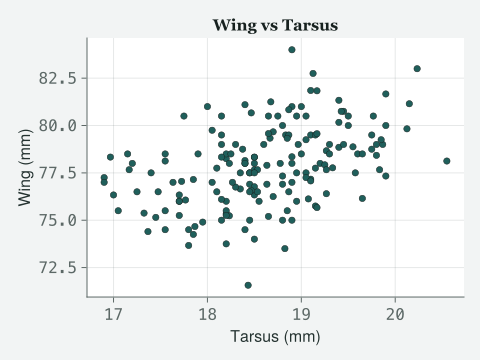
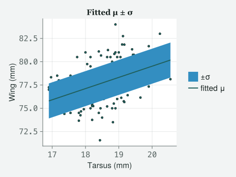
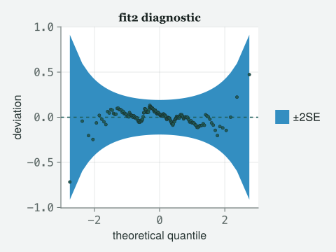
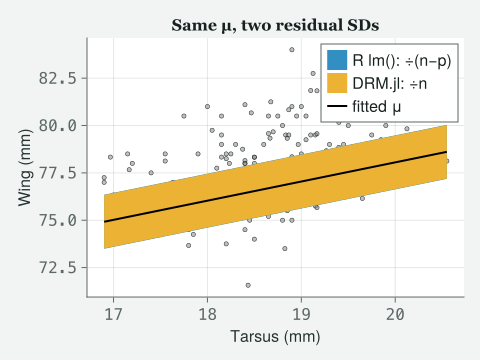
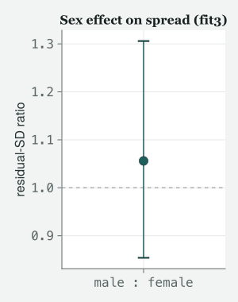

using DRM, DataFrames, CSV, Statistics
sparrows = CSV.read("../data/ch2/sparrows.csv", DataFrame);Stats Hours with Itchy/ Class 2/ Draft
The linear model, taught in one engine — and the morning a student notices that Julia and R disagree about a number.
Draft. Every number and figure on this page comes from code that was actually run when the site was built; the prose is still being written.
The data are real. The 2012 sparrow morphology file (
data/2012/MBodySize.csv) is the one the original 2012 R-book course used — 171 house sparrows measured on Lundy Island, recovered from the author’s own archive folder. This chapter reads a copy of it,data/ch2/sparrows.csv, with the sex column spelled out as female/male and only the four columns it needs kept. Where the file came from, and how to check that your copy is the same, is recorded indata/2012/README.md. Every number in this chapter, spoken or printed, comes from that file.
By the end of this class you should be able to:
drm and read every line of what it prints back.lm() and our engine disagree about one number, and say exactly why.Itchy’s office, 9:00 am. Dunedin, and it is doing that thing where the rain arrives sideways. TOTO is early, dripping. MOMO arrives at 9:00 exactly, which for Momo counts as early. Two laptops open. Itchy is drawing a cloud of dots on the whiteboard.
Julia time. Toto, you are damp.
I cycled.
You cycled in that. Good. Then you already understand today’s lesson: things vary, and some of the variation has a reason. Look at this cloud. Each dot is a house sparrow. Along the bottom, tarsus length; the bony part of the foot, and the standard way we say “how big is this bird” without arguing about how fat it is. Up the side, wing length.
And you want a line through it.
I want a line through it. But I want you to say what the line is before we draw one, because the line is not the model. Toto, what is a linear model?
…the best-fitting straight line?
That is what it looks like. It is not what it is. Here is what it is, and I want you to learn this sentence properly because you will re-use it for the next ten weeks. A linear model says: every sparrow’s wing is drawn from its own normal distribution — the familiar bell-shaped curve, symmetric around its centre; the centre of that distribution slides along a straight line as tarsus increases; and the width of that distribution is the same for every bird.
That is three claims.
It is three claims, and only the middle one gets a p-value in most software, which is a scandal we will spend the whole course fixing. Say them back.
Normal. Centre moves in a line. Width fixed.
(writes on the board)
μ = where the birds are. σ = how spread out they are.
Every model in this course is those two letters. Today μ gets a predictor and σ does not. In Class 4 σ gets predictors too, and you will find you already know how to write it, because we never change tools. Right. Load the data.
using DRM, DataFrames, CSV, Statistics
sparrows = CSV.read("../data/ch2/sparrows.csv", DataFrame);first(sparrows, 6)| Row | BirdID | Sex | Tarsus | Wing |
|---|---|---|---|---|
| String7 | String7 | Float64 | Float64 | |
| 1 | TA14502 | female | 18.4333 | 71.5667 |
| 2 | TA14505 | female | 18.1 | 76.5 |
| 3 | TA14506 | female | 18.45 | 75.0 |
| 4 | TA14507 | female | 18.15 | 75.0 |
| 5 | TA14509 | male | 18.2 | 78.25 |
| 6 | TA14513 | female | 17.3667 | 74.4 |
171 birds. Look before you model, always. Toto, means and spreads.
describe(sparrows[!, [:Tarsus, :Wing]], :mean, :std, :min, :max)| Row | variable | mean | std | min | max |
|---|---|---|---|---|---|
| Symbol | Float64 | Float64 | Float64 | Float64 | |
| 1 | Tarsus | 18.6146 | 0.75411 | 16.9 | 20.55 |
| 2 | Wing | 77.8523 | 2.09324 | 71.5667 | 84.0 |
Wing lengths sit around 78 mm and wander by about 2.09 mm. Hold on to 2.09. It is the number the model has to explain away, and in twenty minutes I am going to ask you how much of it we managed to explain.
fig_data_cloud(sparrows.Tarsus, sparrows.Wing;
xlabel = "Tarsus (mm)", ylabel = "Wing (mm)", title = "Wing vs Tarsus")
Here is the whole thing. One line.
fit1 = drm(bf(@formula(Wing ~ Tarsus)), Gaussian(); data = sparrows);Stop. Why is there a bf in the way? In R I write
lm(Wing ~ Tarsus, sparrows) and I am done. You have added
two words and a semicolon.
Correct, and I am going to defend the two words rather than pretend they
are not there. bf stands for “big
formula”, and it is a box that can hold more
than one formula at a time: one for μ, one for σ, later one for
the correlation between two traits. Today the box holds one formula, so
it looks like packaging with nothing in it.
So it is overhead I pay now for a feature I get in Class 4.
Yes. That is exactly the deal, and you should be annoyed about it for
about two more weeks. What you get for it: from here to the summit of
the mountain, you never change the verb. Not when the
data are counts, not when the birds are siblings, not when we model the
spread itself. It is always drm, always bf,
always a family — here Gaussian(), which just means the
normal distribution I described a minute ago. You will meet people who
learn six packages to climb the same hill and spend their evenings
translating between them. Let us see what came out.
fit1Distributional regression fit (Gaussian)
nobs = 171 logLik = -350.6659 converged = true
Residual SD (response scale) = 1.8809 dof_residual = 168
Mean model (μ):
H0: coefficient = 0
Coef. Std.Error z Pr(>|z|)
(Intercept) 55.4569 3.5638 15.5613 1.334e-54
Tarsus 1.2031 0.1913 6.2893 3.188e-10
Scale model (log σ):
H0: coefficient = 0 on log σ
intercept ⇔ σ = 1 (unit-dependent); slope ⇔ equal dispersion
Coef. Std.Error z Pr(>|z|)
(Intercept) 0.6317 0.0541 11.6829 1.559e-31# Run once by hand in R on 2026-09-06 (drmTMB 0.7.0, R 4.6.0) and pasted in;
# not re-run with the page. The same 171 Lundy Island sparrows, read from
# data/ch2/sparrows.csv.
> sp <- read.csv("data/ch2/sparrows.csv")
> summary(drmTMB(bf(Wing ~ Tarsus), data = sp))
<summary.drmTMB>
estimator: ML
estimate std_error
mu:(Intercept) 55.4568660 3.56377203
mu:Tarsus 1.2031120 0.19129417
sigma:(Intercept) 0.6317395 0.05407379
Distributional, random-effect, scale, and correlation parameters:
component dpar term estimate std_error scale
sigma distributional-scale sigma (constant) 1.880879 0.1017063 response
logLik: -350.7
convergence: 0There are two tables. I only asked for one.
You asked for one and you were given the model. Sit down, this is the moment the engine looks strangest to somebody arriving from R, so let me pay for it properly instead of hurrying past.
Two tables came back because I told you there were always two letters. μ is where the birds are; σ is how spread out they are. R prints both too, it just hides σ at the bottom of the page under “Residual standard error” and hopes you will not ask questions about it. Ours puts it in a table, because in two weeks you will be putting predictors in it.
Why “log σ”?
Because a spread cannot be negative, and an optimiser — the search routine that hunts for the best-fitting numbers — that wanders freely over the number line would eventually try a negative one and fall over. So the engine works with the logarithm, which is allowed to be any number at all, and you undo it at the end.
coef(fit1, :sigma)1-element Vector{Float64}:
0.6317394537001391exp(coef(fit1, :sigma)[1])1.8808794381239688There it is: 1.88 mm. That is the residual standard
deviation, in millimetres, on the natural scale. Now look back at the
top of the fit, where it says Residual SD (response
scale) — the same spread, in millimetres — next to
dof_residual, the number of birds left over after the model
has used up what it needs: 171 birds, minus an intercept, a slope and
one number for the spread, leaves 168. The engine prints that number for
you. I made you compute it by hand once so that the header means
something when you read it, and so that you never mistake the
sigma: row, which is on the log scale, for the millimetres
it is not. And now answer my earlier question, Toto. The raw wing
lengths wandered by 2.09 mm. After we account for tarsus, they wander by
1.88. Was tarsus worth it?
…a bit? It went down but not loads.
“A bit” is the honest answer and I want you to notice how much less exciting it is than a vanishingly small p-value. The p-value says the slope is not zero. It does not say the slope is useful. Those are different questions, and only one of them is about sparrows.
The σ row has a p-value of its own, and it is tiny.
It is, and I want you suspicious of it rather than impressed by it. Every p-value answers a question of the form “how surprised would I be if this number were really zero?” For the slope, zero is a real, interesting hypothesis: tarsus tells us nothing about wing. Fine. Now: what would it mean for that σ row to be zero?
…zero log-sigma. Which is sigma equal to one.
Which is a residual spread of exactly one millimetre. Not “no spread”. One millimetre. Why on earth would anyone want to test that?
Nobody would.
Nobody would, and that is exactly why the engine prints the null
above the table instead of leaving you to reconstruct it from a
column of stars. Read the two lines under Scale model (log
σ). The z column is the estimate divided by its
standard error — its uncertainty — so it counts how many standard errors
from zero the estimate sits, and Pr(>|z|) is the
p-value made from it. For the intercept, zero means σ = 1, and
whether that is true depends entirely on whether you measured in
millimetres or metres. Measure the same sparrows in centimetres and that
p-value changes while nothing whatever about the birds does. A
unit-dependent null is almost never a question about your organism.
So I ignore it.
You ignore that one, and the same heading tells you when not to. The second line is about a σ slope, where zero means “these groups vary by the same amount”, and that is a real question about real animals. We will ask it before you go home. The rule is: read the null, then decide whether you care. A number the software is willing to compute is not automatically a number you should report.
Can I see all of it in one table?
coeftable(fit1)| Estimate | Std.Error | z | Pr(>|z|) | Lower 95% | Upper 95% | |
|---|---|---|---|---|---|---|
| mu: (Intercept) | 55.4569 | 3.56377 | 15.56 | <1e-53 | 48.472 | 62.4417 |
| mu: Tarsus | 1.20311 | 0.191294 | 6.29 | <1e-09 | 0.828182 | 1.57804 |
| sigma: (Intercept) | 0.631739 | 0.0540738 | 11.68 | <1e-30 | 0.525757 | 0.737722 |
Better. Confidence intervals included, and I want you reading the interval before the p-value from now on. A sparrow with a tarsus one millimetre longer has a wing about 1.2 mm longer, and the data are consistent with anything from 0.83 to 1.58. That is a sentence about birds. Notice it contains no asterisks.
The intercept is 55.46. A sparrow with a tarsus of zero has a 55 mm wing.
A sparrow with a tarsus of zero is not a sparrow, it is a tragedy. The intercept is where the line crosses a place your data never went; tarsus ranges from 16.9 to 20.6. It is a bookkeeping number, not biology. You can make it biology by centring tarsus on its mean, and then the intercept becomes “the wing of an average-sized sparrow”, which is a thing that exists. That is one of your exercises.
fig_fit_ribbon(sparrows.Tarsus, sparrows.Wing, fitted(fit1), sigma(fit1);
xlabel = "Tarsus (mm)", ylabel = "Wing (mm)", title = "Fitted μ ± σ")
(typing) I wanted to check something and I got a wall of red.
drm(@formula(Wing ~ Tarsus), Gaussian(); data = sparrows)MethodError: no method matching drm(::StatsModels.FormulaTerm{StatsModels.Term, StatsModels.Term}, ::Gaussian; data::DataFrame)
Closest candidates are:
drm(::DrmFormula, ::Gaussian; data, K, A, tree, coords, g_tol, algorithm, method, profile_ci, phylo_coupled, penalty, sparse, impute, missing)
drm(::BivariateDrmFormula, ::Gaussian; data, tree, K, A, coords, spatial_range, g_tol, q4_g_tol, q4_iterations, q4_n_newton, q4_vcov, method, V)
(stack trace omitted)
Good. Everybody look at this, because Julia’s error messages are the thing that makes R users give up in week one, and they are actually the most useful errors in any language I use once you know the shape.
Read it as three parts. What you asked for, on the first line: you handed drm a FormulaTerm. What it knows how to do, underneath: it takes a DrmFormula, or a BivariateDrmFormula. And the mismatched argument is printed in red in each candidate — the same marker appears as the word !Matched where there is no colour — so you do not have to guess which of the four things you typed was the problem.
So it is telling me I forgot the bf.
It is telling you exactly that, in five hundred characters and one
exclamation mark. Momo, this is the honest cost of the bf
wrapper: forget it and you get a method error rather than a fit. It is a
one-token mistake with a loud, informative failure, and I will take that
over a quiet one every time.
(typing) And this one is just me.
drm(bf(@formula(Wing ~ Tarsis)), Gaussian(); data = sparrows)ArgumentError: There isn't a variable called 'Tarsis' in your data; the nearest names appear to be: Tarsus (stack trace omitted)
(delighted) It spelled it for you. It looked at your typo, went through your column names, found the closest one, and handed it back. Toto, you have been misspelling things all year and I have never been so pleased about it.
Now. Males are bigger. Does that matter?
In the model or in general?
In the model. In general it matters a great deal to a female sparrow. Add it.
fit2 = drm(bf(@formula(Wing ~ Tarsus + Sex)), Gaussian(); data = sparrows)Distributional regression fit (Gaussian)
nobs = 171 logLik = -301.7781 converged = true
Residual SD (response scale) = 1.4132 dof_residual = 167
Mean model (μ):
H0: coefficient = 0
Coef. Std.Error z Pr(>|z|)
(Intercept) 57.8218 2.6855 21.5310 7.986e-103
Tarsus 1.0116 0.1447 6.9917 2.717e-12
Sex: male 2.5012 0.2178 11.4854 1.562e-30
Scale model (log σ):
H0: coefficient = 0 on log σ
intercept ⇔ σ = 1 (unit-dependent); slope ⇔ equal dispersion
Coef. Std.Error z Pr(>|z|)
(Intercept) 0.3458 0.0541 6.3958 1.597e-10# Run once by hand in R on 2026-09-06 (drmTMB 0.7.0, R 4.6.0) and pasted in;
# not re-run with the page. The same 171 Lundy Island sparrows, read from
# data/ch2/sparrows.csv.
> sp <- read.csv("data/ch2/sparrows.csv")
> summary(drmTMB(bf(Wing ~ Tarsus + Sex), data = sp))
<summary.drmTMB>
estimator: ML
estimate std_error
mu:(Intercept) 57.821818 2.68551932
mu:Tarsus 1.011631 0.14469114
mu:Sexmale 2.501172 0.21776962
sigma:(Intercept) 0.345846 0.05407379
Distributional, random-effect, scale, and correlation parameters:
component dpar term estimate std_error scale
sigma distributional-scale sigma (constant) 1.413185 0.07641626 response
logLik: -301.8
convergence: 0One term added. Same verb, same wrapper, same family. Notice what the
engine did without being asked: Sex arrived as text, and it
worked out that “female” comes first alphabetically, made it the
baseline, and gave you a coefficient for male measured
relative to female. Males have wings about 2.5 mm
longer than females of the same tarsus length.
Tarsus dropped. It was 1.2, now it is 1.01.
(pleased) That is the most important observation anyone has made this morning, and if you take one thing home take this. The tarsus coefficient did not change because the birds changed. It changed because the question changed.
In fit1 it answered: pick two sparrows differing by one millimetre of tarsus; how much do their wings differ? Some of that difference was really about sex, because males have longer tarsi and longer wings, so tarsus was quietly carrying sex’s luggage.
In fit2 it answers: pick two sparrows of the same sex differing by one millimetre of tarsus. Sex is now carrying its own bag. The slope is smaller because it is doing less work.
So the first one was wrong?
No, and I want to be careful here because this is where people get superstitious. The first one was a different question, correctly answered. Neither is wrong. But if you are trying to say something about growth, the second is almost certainly the question you meant. A coefficient without the rest of the model attached to it means nothing; that is why you never report one on its own.
fig_diagnostic(residuals(fit2; type = :quantile); title = "fit2 diagnostic")
Prove it is worth the extra term.
aic(fit1), aic(fit2)(707.3318715214452, 611.5562817546105)lrtest(fit1, fit2)(statistic = 97.77558976683474, dof = 1, pvalue = 4.685886499453756e-23)AIC — the Akaike information criterion, a score that rewards fit and charges for every extra parameter; lower is better — drops by about 96, which is enormous — this is not the polite few-points improvement you learn to shrug at; the likelihood-ratio test, which asks how much more likely the data are under the bigger model than under the smaller, costs one parameter and returns a p so small the printer basically gives up on decimal places: 4.7e-23. Both say the same thing, loudly: sex earns its place.
Two warnings, and they are not decoration. One: that test is only legal because fit1 is nested inside fit2; you get fit1 by setting the sex coefficient to zero. Compare two models that are not nested this way and the number you get is nonsense with a p-value stapled to it. Two: this comparison is honest here because both fits used the same recipe for turning data into numbers, on the same birds. In Class 8 you will meet a situation where two perfectly correct fits use different likelihoods and this comparison silently becomes illegal. I am flagging it now so that when I say “you cannot do that” in Class 8 you will remember I warned you.
(typing quietly) I ran it in R while you were talking. R says
my residual standard error is 1.426 — I have the printout
here. I exponentiated your 0.3458 and got 1.413.
(stops, genuinely happy) Say that again, louder, so Toto hears it.
Your engine and R disagree.
Good. Everybody stop typing. This is the best thing that has happened this term.
⚠ DISAGREE — the same regression, two residual SDs
Momo fits the identical model in R with lm(). Every slope agrees to five decimal places. The residual spread does not, and neither does the standard error on the slope. Nobody has made a mistake.
# Run once by hand in R on 2026-09-06 (R 4.6.0, stats::lm) and pasted in;
# not re-run with the page. The same sparrows, from data/ch2/sparrows.csv.
lm(Wing ~ Tarsus + Sex, data = sparrows) # Rdrm(bf(@formula(Wing ~ Tarsus + Sex)), Gaussian(); data = sparrows) # Julia| quantity | R lm() |
DRM.jl drm |
ratio |
|---|---|---|---|
| Tarsus slope | 1.011631 | 1.011631 | 1.000000 |
| Sex (male) | 2.501172 | 2.501172 | 1.000000 |
| residual SD | 1.425747 | 1.413185 | 1.008889 |
| SE of Tarsus slope | 0.145977 | 0.144691 | 1.008889 |
| log-likelihood | −301.778141 | −301.778141 | 1.000000 |
| reference distribution | t on 168 degrees of freedom | z (normal) |
The mechanism. Both fits maximise the same likelihood and land on the same coefficients. They then divide the squared residuals by different numbers. lm() divides by n − p, where p counts only the mean coefficients (here 171 − 3 = 168 — not the 167 in fit2’s own header above, which also charges for σ), which makes the variance estimate — the SD squared — unbiased: its average across repeated samples lands on the true value rather than drifting to one side. Our engine reports the maximum likelihood estimate, which divides by n (171). The ratio is therefore exactly √(n / (n − p)) = √(171/168) = 1.008889, which is precisely what you see, to six decimal places, in both the SD and the standard error. It is one arithmetic choice, not a bug in either package.
# fit2's mu coefficients are [Intercept, Tarsus, Sex:male]; female is the
# baseline. A smooth grid at Sex = female avoids the zigzag that
# plotting fitted() at each observation would give once Sex is in the model.
# The scatter on the left is filtered to females too: fit2's ~2.5 mm sex
# effect is bigger than the ~1.4 mm band, so plotting both sexes around a
# female-only band would bury the divisor question under an unrelated,
# unlabelled population offset.
b = coef(fit2, :mu)
xs = range(minimum(sparrows.Tarsus), maximum(sparrows.Tarsus); length = 100)
mu2 = b[1] .+ b[2] .* xs
p_mu = length(b) # 3: intercept, Tarsus, Sex
sigma_ours = sigma(fit2)[1] # ÷n (DRM.jl, ML)
sigma_r = sigma_ours * sqrt(nobs(fit2) / (nobs(fit2) - p_mu)) # ÷(n−p) (R lm())
females = sparrows.Sex .== "female"
fig = Figure(size = (760, 340))
ax1 = Axis(fig[1, 1]; xlabel = "Tarsus (mm)", ylabel = "Wing (mm)",
title = "Fitted line, females only")
# band and line first, real data drawn LAST so no point is ever painted over
band!(ax1, xs, mu2 .- sigma_ours, mu2 .+ sigma_ours)
lines!(ax1, xs, mu2; linewidth = 2, color = :black)
scatter!(ax1, sparrows.Tarsus[females], sparrows.Wing[females]; markersize = 6)
# The two divisors are a deterministic ratio of one another (sqrt(n/(n-p))),
# not two independent estimates, so no error bars: whiskers sized to the
# fit's own sampling SE (~0.076 mm) would be ~6x wider than the 0.013 mm gap
# between them and would swallow the very difference this panel exists to
# show. Two plain points, y-axis zoomed to just the two of them, is honest.
ax2 = Axis(fig[1, 2];
xticks = (1:2, ["R lm()\n÷(n−p)", "DRM.jl\n÷n"]),
ylabel = "residual SD (mm)",
title = "Same gap, zoomed in")
xlims!(ax2, 0.5, 2.5)
scatter!(ax2, [1], [sigma_r]; markersize = 14, color = Cycled(1))
scatter!(ax2, [2], [sigma_ours]; markersize = 14, marker = :diamond, color = Cycled(2))
fig
When it stops mattering. The gap is √(n/(n − p)), so it shrinks as your sample grows relative to the number of things you are estimating: about 0.89% here, and it would fall further still with more birds at the same three parameters — enormous if you ever fit twenty coefficients to thirty birds. It bites hardest exactly where beginners work. R also judges each slope against a t distribution (slightly wider tails, to allow for having estimated the spread) where we use the plain normal; that difference pushes the same way as the larger standard error, not against it, so both make R’s p-value the larger one — on the Tarsus slope, R’s own printout gives Pr(>|t|) = 8.59e-11 against our 2.72e-12, on a slope neither package doubts.
Why this is worth a page in Class 2. This is the small, tame version of the argument that takes a whole chapter later. Divide by n, or divide by something that accounts for the other numbers you also had to estimate: that same choice, in the models of Class 6 onward — where birds come in families or sites — is the difference between plain maximum likelihood (ML) and restricted maximum likelihood (REML), and there the disagreement is not under one percent on a number you never wanted; it is the spread between groups, the number you came for. Our engine uses ML in both languages. lme4, the usual R package for those models, uses REML. Neither told you. That is Class 8.
DRM.jl 0.7.1 (Julia 1.10.0) · R 4.6.0 stats::lm and drmTMB 0.7.0 · R numbers run once by hand on 2026-09-06 on the same 171 Lundy Island sparrows and pasted in; the Julia numbers are computed with the page
So which one is right?
Both. They answer slightly different questions about the same fit, and if you had not looked you would never have known there was a question. That is what I want you frightened of: not software that disagrees, but software that agrees for reasons you cannot name.
And R prints an R-squared and you do not.
It does — R² is the share of the variation in wing that the model
accounts for, on a scale from 0 to 1 — and before I give you ours I am
going to make you compute it, because the computing is where the lesson
is. Your raw wing spread was 2.093, your residual spread is 1.413, so
the model has taken out 1 − 1.413²/2.093², which is 0.544. Your R
printout says 0.5415. And no, before you ask, that gap is not
the one we just spent ten minutes on. I got 2.093 from
describe, which divides by n − 1, and 1.413 from
the engine, which divides by n. I mixed them. R never has to
choose, because R² compares two sums of squares and the divisors cancel
before they can argue. Put the same divisor on both of mine and you get
0.5415 — R’s actual answer. (Beat.) Two different divisor
mistakes in one morning, and the second one was mine.
And the button?
Now you may have the button.
r2_constant_sigma(fit2)0.54153602944178060.5415, which is R’s lm R² to every digit R prints. I made
you do it the long way first because the long way is where the divisor
lives and the button will not teach you that. Two things before we move
on. R-squared causes at least as much trouble as it prevents once we get
above this rung, and I will show you why in Class 5. And the function is
called r2_constant_sigma and not r2, which is
not fussiness. You will find out why in about four minutes.
Last thing, and it is a peek, not a lesson. Look at the σ table one more time. It has been sitting there all morning with a single intercept in it, doing nothing.
You are going to put Sex in it.
fit3 = drm(bf(@formula(Wing ~ Tarsus + Sex), @formula(sigma ~ Sex)),
Gaussian(); data = sparrows)Distributional regression fit (Gaussian)
nobs = 171 logLik = -301.6513 converged = true
Residual SD (response scale) varies with the σ model: 1.3757 to 1.4528 dof_residual = 166
Mean model (μ):
H0: coefficient = 0
Coef. Std.Error z Pr(>|z|)
(Intercept) 57.8574 2.6912 21.4985 1.609e-102
Tarsus 1.0097 0.1450 6.9630 3.332e-12
Sex: male 2.5015 0.2183 11.4614 2.063e-30
Scale model (log σ):
H0: coefficient = 0 on log σ
intercept ⇔ σ = 1 (unit-dependent); slope ⇔ equal dispersion
Coef. Std.Error z Pr(>|z|)
(Intercept) 0.3190 0.0750 4.2549 2.092e-05
Sex: male 0.0545 0.1083 0.5034 0.6147exp.(coef(fit3, :sigma))2-element Vector{Float64}:
1.3757070292392783
1.056016793235814By hand, as before, and then look at the header. Residual SD
(response scale) varies with the σ model, and it prints the
range rather than a single number, because with Sex in σ
there is no single number to print.
aic(fit3)613.3026370614464One extra formula in the same box, and this time I want you to watch me
lose the argument. Females vary by about 1.38 mm around their line;
males by about 1.45 mm — a little more, not less. But look at
the AIC: 613.3 against fit2’s 611.56. Adding Sex to σ made
the AIC worse, by about 1.75. The third assumption I made you
recite at nine o’clock — the one about the width being the same for
every bird — is technically false in these data, sex-in-σ is not the
story that pays for itself here.
So the whole thing was pointless?
No — it was the correct thing to try, and it just did not survive contact with real sparrows. That is a better lesson than the one I was expecting to teach you. AIC is not a formality you run to confirm what you already believed; it is the referee, and today it overruled me. We added seven characters, asked a real question, and the honest answer was not “no” — it was not detected, and those are different claims.
And now the row I promised you this morning. Look at
Sex: male in the σ table. It has a z of 0.503 and a
p of 0.61, and the null printed above it is the one that is
worth testing: equal dispersion, males and females varying by the same
amount. Read the coefficient as a ratio and the claim gets sharper:
males vary 1.056× as much as females, 95% interval [0.854, 1.306] — an
interval that sits on both sides of 1. And at 171 sparrows, the smallest
ratio this sample would have caught four times out of five — that is
what “80% power” means — is 1.354-fold; ours is nowhere near that. That
is not a unit-dependent curiosity like the intercept’s σ = 1. That is a
question about sparrows, and the honest answer is not disproved, it is
not detected: the interval includes 1, and this sample could not have
told us about a sex difference smaller than 1.354-fold even if one were
sitting right there in the birds. Two referees, arriving from different
directions, agreeing.
(chalk, not keyboard) Let me put that last sentence on the board instead of in your ears.
fig = Figure(size = (300, 380))
ax = Axis(fig[1, 1];
xticks = ([1], ["male : female"]),
ylabel = "residual-SD ratio",
title = "Sex effect on spread (fit3)")
xlims!(ax, 0.5, 1.5)
hlines!(ax, [1.0]; linestyle = :dash, color = (:grey, 0.6))
rangebars!(ax, [1], [sex_sigma_lo], [sex_sigma_hi]; whiskerwidth = 14, color = Cycled(1))
scatter!(ax, [1], [sex_sigma_ratio]; markersize = 16, color = Cycled(1))
fig
The dot’s above the line, but the bar still crosses it.
That is exactly the finding, in one glance, and it took me four sentences to say it in words a minute ago. The point estimate says males vary a bit more — that dot sitting above 1 is real, it is what the fit actually returned. The bar is what tells you not to trust it yet: it reaches down past 1, so “males vary a bit more” and “no difference at all” are both still standing after 171 sparrows.
Then give me the R² for this one and I will go home.
Try it.
r2_constant_sigma(fit3)ArgumentError: r2_constant_sigma refuses a MODELLED σ: the `sigma` block carries 1 non-intercept term(s) (Sex: male). The total variance then changes with the covariates, so R² has no single denominator — variance at the mean covariate, averaged over the sample, and at σ's intercept all give different answers. Fit `sigma ~ 1` if you want the ordinary R². (stack trace omitted)
It refused.
It refused, and read what it says, because it is the best sentence in
the package. The total variance now changes with the
covariates — the predictors, Tarsus and Sex — so R² has no
single denominator: males and females have different spreads, so “the
variance of the data” is several different quantities and the function
will not pick one and pretend. That is what the name has been telling
you since four minutes ago. r2_constant_sigma computes R²
where R² means one thing, and declines everywhere else.
So R would have given me a number here.
R would not have been asked, because lm cannot fit this
model. Something else in R would give you a number, and you would have
to find out for yourself which denominator it picked. One caution, and
then we really are done: that refusal is what the function does
today, not a promise for ever. The package’s own
documentation marks r2_constant_sigma as
experimental, and is precise about which half is which:
the number is settled, and it is the refusals that may widen later. The
0.5415 you got for the last model is not going to move. What the
function declines to answer might.
(packing up) AIC said no and you are still pleased about it.
I am. A model that only ever confirms the story you walked in with is not doing any work. Ask me again in Class 4, once there are more sparrows in the room.
Do water fleas have tarsi?
Toto, water fleas have carapace length, and you are going to regress something on it before Thursday. Off you go.
Toto and Momo leave into the horizontal rain. Itchy stays, rereads the two nulls printed above the σ table, and does not close the laptop for some time.
using DRM, DataFrames, CSV, Statistics: the four packages this chapter needs.CSV.read("file.csv", DataFrame): read a table. Text columns arrive as String7 and similar; that is Julia being efficient, not a different type of text.first(df, 6), describe(df[!, [:a, :b]], :mean, :std, :min, :max): look before you model.@formula(y ~ x): the formula. Required; drm will not accept a formula written any other way.bf(...): the “big formula” box. Holds one formula today, several later (bf(@formula(y ~ x), @formula(sigma ~ z))). Required, even when it holds only one.drm(bf(...), Gaussian(); data = df): the fit. Verb, box, family, data. This exact shape carries every model in the book. Note the family is positional and the data is a keyword.coef(fit, :mu), coef(fit, :sigma): the coefficients of one sub-model, as a plain vector.exp(coef(fit, :sigma)[1]): the residual SD in the units of your response. The fit’s header prints the same number as “Residual SD (response scale)”; do it by hand once so you know what the header means.coeftable(fit): everything, with 95% intervals. summary(fit) gives the same table.confint(fit): the intervals as named tuples, if you want them programmatically.loglik(fit), aic(fit), bic(fit), nobs(fit), dof_residual(fit): the log-likelihood, AIC, BIC (the Bayesian information criterion, AIC’s stricter cousin, which charges more for each parameter), the number of birds and the residual degrees of freedom. Note the Julia spellings; there is no logLik or AIC.lrtest(fit_small, fit_big): likelihood-ratio test for nested models.MethodError. Line one is what you asked for; the candidates below are what exists; the argument that was wrong is printed in red (the same marker appears as !Matched where there is no colour). It is verbose because it is complete.ArgumentError from a formula. Misspell a column and the engine suggests the nearest real name. Use it.Simulating from a fitted model. Every model in this book can generate data as easily as it can fit it, and doing so is the fastest way to check you understand what you fitted.
using Random, Distributions
rng_sim = MersenneTwister(2012)
mu_hat = coef(fit1, :mu)[1] .+ coef(fit1, :mu)[2] .* sparrows.Tarsus
sigma_hat = exp(coef(fit1, :sigma)[1])
wing_sim = [rand(rng_sim, Normal(m, sigma_hat)) for m in mu_hat]
sim_df = DataFrame(BirdID = sparrows.BirdID, Sex = sparrows.Sex,
Tarsus = sparrows.Tarsus, Wing = wing_sim)
fit1_sim = drm(bf(@formula(Wing ~ Tarsus)), Gaussian(); data = sim_df);coef(fit1, :mu)[2], coef(fit1_sim, :mu)[2](1.2031120353871703, 1.1875405568706943)By hand, one draw at a time: rand(Normal(μ̂, σ̂)) for each bird’s fitted mean, refit the same model, and the tarsus slope above wanders from fit1’s to a slightly different number — same data-generating process (the same recipe for making wing lengths), different noise, different estimate. That wander is sampling variability, made visible instead of assumed.
rng_sim = MersenneTwister(200) # a seed is a promise: the same draw every time this is run
sims = simulate(fit1; nsim = 200, rng = rng_sim);mean(std.(eachcol(sims .- fitted(fit1)))), mean(std.(eachcol(sims)))(1.8703085195848685, 2.0840219108107236)simulate(fit; nsim = n) (exported — meaning DRM makes it public, so you can call it directly after using DRM — nsim matching R’s own keyword) does the same thing two hundred times at once, returning a birds-by-simulations matrix. The trap: each simulated column still carries fit1’s fitted mean structure, so its raw spread is close to the raw wing spread, not sigma_hat. Subtract fitted(fit1) from each column first — the first number above, near 1.88 — and only then does it match the model’s own σ; the second number, without the subtraction, does not, and looks like the model cannot reproduce its own residual spread when it can. Appendix A takes this idea further and simulates whole sparrow datasets from a fitted model.
Graded by depth. References checked 2026-09-07.
fit3 at the end of class is a one-line child of this idea.getting-started and capabilities. The capability page is unusually honest about what the package cannot do and where its own arithmetic is less exact than it would like. Read the warning boxes; they are the interesting part.@formula documentation. Everything the formula grammar can express, including interactions, transformations and how contrasts are chosen. This grammar is shared across the Julia statistics ecosystem, so learning it once pays everywhere.Use your own organism where one is named. For every question, paste your code and then explain in your own words what each line does, as if to somebody who has done Class 1 and not Class 2.
Centre the intercept. Add a column TarsusC = Tarsus - mean(Tarsus) and refit Wing ~ TarsusC. Which numbers changed and which did not? Write one sentence saying what the new intercept means, in millimetres, about a real sparrow.
Predict a bird. Using fit2, compute by hand (from the coefficients, not with a function) the expected wing length of a male sparrow with a 19.0 mm tarsus. Then compute it for a female with the same tarsus. Explain in one sentence what the difference between your two answers is, and why it does not depend on the tarsus value you chose.
Break it deliberately. Fit Wing ~ Sex alone, then Wing ~ Tarsus + Sex. The sex coefficient changes. Explain why, using the same reasoning Itchy used for the tarsus slope. Which of the two numbers would you put in a paper about sexual size dimorphism, and why?
Toto’s water fleas. (Daphnia) Regress body length on carapace length. Report the slope with its 95% interval, and the residual SD on the natural scale using exp. Then answer: was the predictor worth it? Compare the residual SD to the raw SD of body length and say so in one sentence with numbers in it.
Momo’s tadpoles. Fit a model with a categorical predictor of three levels (for example, three ponds). You will get two coefficients, not three. Explain what happened to the third pond, and write down how you would get the mean of each pond from the coefficients you were given.
Eddie’s dunnocks. Fit Wing ~ Tarsus and then the same model with @formula(sigma ~ Tarsus) added to the bf. Report both AICs. Does the spread of dunnock wing lengths change with body size? Write two sentences: one about the statistics, one about the birds.
The disagreement, on your own data. Fit your model both in Julia with drm and in R with lm. Confirm the coefficients match and the residual SDs do not. Verify numerically that the ratio equals √(n/(n − p)) for your n and p. Then answer in one sentence: if a referee asked you to report “the residual standard deviation”, which of the two would you give them, and would you say which one it was?
Simulate the σ~Sex question yourself. Simulate 200 new wing-length datasets from fit2 (constant σ, no Sex in the σ formula) with simulate(fit2; nsim = 200, rng = MersenneTwister(1)), refit fit3’s σ~Sex model to each, and record the AIC difference each time. Where does today’s actual AIC difference (fit3 minus fit2) fall in that distribution? Write one sentence about whether today’s result looks like ordinary sampling noise or a real signal.